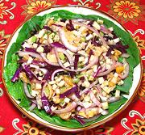

|
Red Cabbage Salad with FennelSpain - Catalonia - Ensalada de Col Lombarda | ||||
| Serves: Effort: Sched: DoAhead: |
5 salad ** 20 min Most |
This salad presents interesting flavors and textures and makes a good buffet dish, or can be served as individual boats (see Do-Ahead) and Serving. | |||
|
|
1 1 1/2 7 14 5 ar ------ 2/3 1/4 1 2 1/2 1/4 ------ |
c c c oz oz oz --- c c t t t t --- |
Red Cabbage Fennel Bulb (1) Celery Apple, tart Orange Onion, Red Lettuce (2) -- Dressing Olive Oil ExtV Sherry Vinegar Dijon Mustard Tarragon, fresh Salt Pepper ------------- |
Prep - (20 min)
|